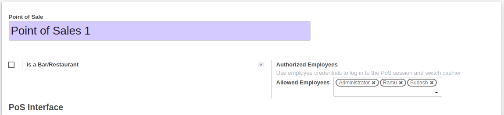
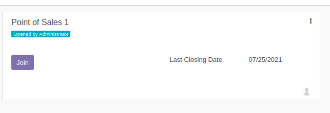

Overview
The module allows multiple employees/users to join a single POS session.
Screenshots
Tick "Authorized Employees" checkbox in POS configuration settings and add "Allowed Employees".

"Join" button will be visible to other allowed employees rather than the employee who opened the session.
